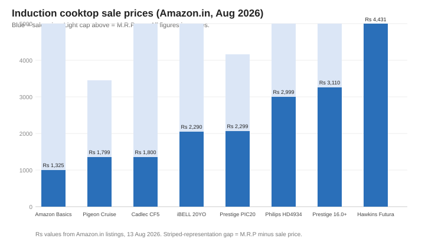

Best Induction Cooktop in India (2026): 8 Top Picks Compared
The short version
TL;DR: For most Indian kitchens, a 1600W to 2000W induction cooktop between roughly Rs 1,300 and Rs 3,100 is the sweet spot. The Pigeon Cruise 1800W (around Rs 1,799) is the best all-round pick on Amazon.in's bestseller list, while the Philips HD4934 1300W (around Rs 2,999) is the safer buy if you regularly deal with voltage surges. If you cook for a bigger family and want the most power, the Hawkins Futura 2000W hob (around Rs 4,431) is the premium option.Prices here are Amazon.in sale prices pulled in August 2026 and they move around a lot with deals and festivals. Treat every number as a range, not a fixed quote.
What should you actually look for in an induction cooktop?
Three things matter more than brand flash: wattage, surge protection, and the warranty terms. A 1200W cooktop will heat slowly for dosa and roti; 1600W feels balanced; 2000W gets a big vessel of dal going noticeably faster. Almost every model here is .BIS. certified, which is the standard you want for an appliance that pulls serious current. Auto shut-off and overheat cut-out are now standard, so treat them as expected rather than selling points.
If your area has old wiring or frequent spikes, pay extra attention to surge protection. That is where the Philips stands out, and it is a real reason to spend more.
Best budget induction cooktop: Amazon Basics 1600W
This is the cheapest 1600W in Amazon's own budget line: 7 preset menus, a 20A IGBT, 4KV surge protection, and auto cut-off. The tradeoff is a basic LED display and push buttons rather than touch, and fewer preset modes than Prestige or Pigeon rivals. Fine for tea, eggs, and one-pot meals.
Best overall / bestseller: Pigeon by Stovekraft Cruise 1800W
This is the top bestseller in the category with over 10,000 bought in the past month at the time of writing. It is a 1800W unit with a crystal glass top, a 7-segment LED display, and auto switch-off. Stovekraft owns both Pigeon and Milton, so service and spares are reasonably easy to get. It is the safest "no surprises" pick in the list.
Best value 2000W on a budget: Cadlec CookFusion 5 2000W
Getting 2000W near Rs 1,800 is a strong deal. It has 8 cooking modes, auto shut-off, overheat protection, an LED display, and BIS approval, packaged as a two-year warranty. Cadlec is a newer brand and smaller than Prestige, so weigh brand recognition and after-sales reach against the wattage-per-rupee.
Best warranty-focused pick: iBELL 20YO 2000W
The headline here is a three-year warranty on a 2000W full-touch panel with dual or single coil technology, crystal glass top, and the usual auto shut-off and overheat protection. A three-year term is above the one-year standard in this category, and it is a real point of difference for the price.
Best-selling branded value: Prestige PIC 20 1600W
The PIC 20 is one of the highest-volume Prestige induction cooktops, over 9,000 bought in the past month when we checked. It packs 4KV surge protection, eight preset Indian menu options, a softer-touch button panel, and a one-year warranty. Presets tailored to desi cooking (with named modes for common dishes) plus a dependable brand make it the pick most households will be happy with.
Best for surge-prone areas: Philips HD4934/00 1300W
The Philips is the one to spend on if voltage spikes worry you. It uses Triple MOV protection rated for 4kW surges, soft-touch control, seven preset menus, and notably a three-year warranty on the coil. The catch is the 1300W output, the lowest here, so expect slower boiling on larger pots.
Best higher-power branded pick: Prestige PIC 16.0 Plus 2000W
This is the 2000W step up within Prestige's own line, keeping the 4KV surge protection and eight Indian presets but adding headroom for bigger batches and faster boiling. It is comfortably the price point where a larger family gets both brand and power.
Best premium hob: Hawkins Futura Single Induction Hob 2000W
Hawkins positions this as a proper hob rather than a budget cooktop: 2000W, 20 power settings, precise timed intervals, and a child lock. The tight M.R.P gap (10% off) means it rarely discounts hard. If fine-grained temperature control matters to you, this is the most "stove-like" option in the list.

How do these models compare?
| Model | Wattage | Sale price | M.R.P | Best for |
|---|---|---|---|---|
| Amazon Basics 1600W | 1600W | Rs 1,325 | Rs 3,799 | Budget entry |
| Pigeon Cruise 1800W | 1800W | Rs 1,799 | Rs 2,922 | Bestseller, all-round |
| Cadlec CookFusion 5 | 2000W | Rs 1,800 | Rs 3,999 | Budget 2000W |
| iBELL 20YO | 2000W | Rs 2,290 | Rs 4,490 | Three-year warranty |
| Prestige PIC 20 | 1600W | Rs 2,299 | Rs 3,645 | Branded value |
| Philips HD4934/00 | 1300W | Rs 2,999 | Rs 3,995 | Surge protection |
| Prestige PIC 16.0 Plus | 2000W | Rs 3,110 | Rs 4,685 | Branded 2000W |
| Hawkins Futura | 2000W | Rs 4,431 | Rs 4,950 | Premium control |
Check today's prices on Tata CLiQ → (prices move with sales; verify before buying)
Prices are from Amazon.in on 13 August 2026 and will change with deals and festivals.
Recap: what to check before you buy
- Confirm wattage matches your cooking. 1600W is a comfortable default; 2000W helps big batches.
- Look for .BIS. certification and auto shut-off. Both should be non-negotiables.
- Check surge protection (4KV or Triple MOV) if your power is unreliable.
- Read the warranty length and whether the coil has separate cover (Philips offers 3 years on the coil).
- Make sure your cookware is induction-compatible. A magnet test against the base settles it.
- Price-check during sale events; cooktop pricing swings by hundreds of rupees.
FAQ
Is a 2000W induction cooktop better than 1600W?
For faster boiling and larger vessels, yes. For normal roti, dal, and sabzi portions, 1600W is plenty and slightly easier on overload-prone wiring. Pick 2000W only if you regularly cook in bulk.
Does an induction cooktop work with any utensil?
No. It only heats ferromagnetic cookware. Hold a magnet to the base; if it sticks, the pan works. Stainless steel with a magnetic base and cast iron work; plain aluminium and glass do not.
What does surge protection actually do?
It protects the electronics from voltage spikes on the line. Models advertise 4KV protection or, in Philips' case, Triple MOV rated for 4kW surges. If your area has frequent power fluctuation, it is worth the extra money.
How is this different from a regular electric stove?
Induction heats the pan directly through a magnetic field rather than a hot coil, so it is faster to boil and the glass stays cooler to the touch. The tradeoff is that it only works with magnetic cookware.
Which cooktop is best for a small family of two?
A 1600W model like the Amazon Basics or Prestige PIC 20 is ample. There is no benefit to paying for 2000W if you rarely cook large quantities.
Sources: product listings and prices read from Amazon.in on 13 August 2026.